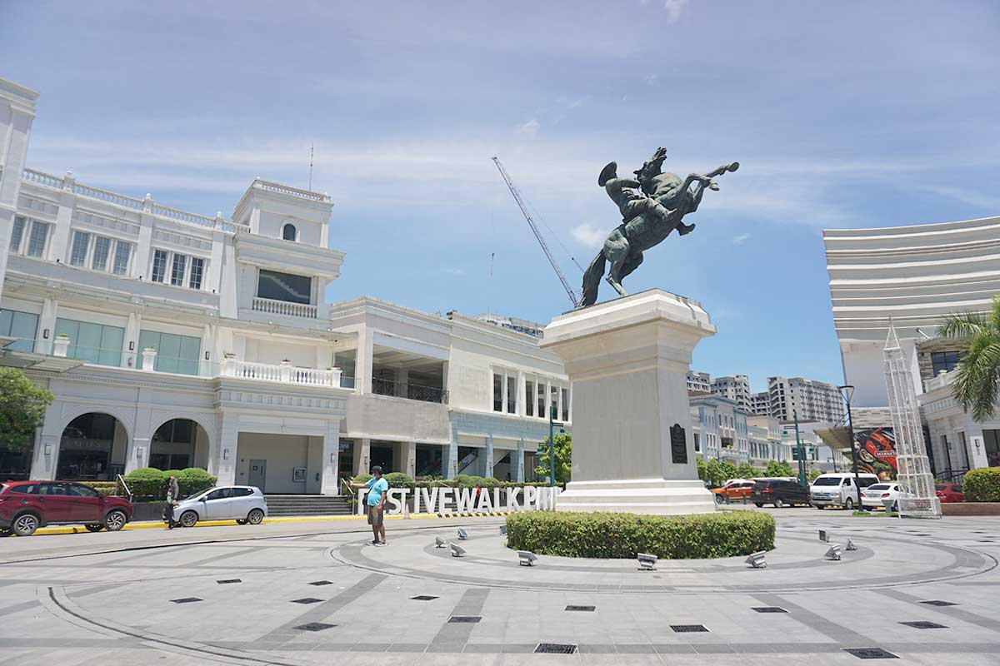

Captivating with visionary lifestyle and gateway of a strong synergy for progress, business and leisure in Iloilo City and the whole Western Visayas is all about Megaworld's Iloilo Business Park The 72-hectare master-planned mix-use development community project ini Mandurriao District is considered as the vibrant future township of exciting possibilities.
Iloilo Business Park is Megaworld's biggest single investment outside Luzon worth P35 billion Gorgeously seen in this vibrant township are BPO buildings that made up the biggest IT-BPO Cyberpark in the region, the iconic 3,700-seater Iloilo Convention Center, luxury hotel brands- Richmonde Hotel and Courtyard by Marriott, lifestyle shopping center Festive Walk Mall, VisMin's 1.1 kilometer longest shop-and-dine strip Festive Walk Parade. Manifest your success and greatness with exceptionally impressive condominium towers-One Madison Place La Fayette Park Square The Palladium, Saint Honore and Saint Dominique Rise and grow your investments along the soon-to rise property investments - The Pinnacle, a 20-storey pre selling residential condominium, International Corporate Plaza, Iloilo City's most modern pre-selling commercial condominium tower, as well as the Belmont Hotel lloilo, part of the luxurious Megaworld Hotels and Resorts brand, Iloilo Business Park show cases the highly-anticipated 92 hectare Boutique Hotel and Commercial District, envisioned to be the next Central Business District (CBD) in the Visayas, with 80% sold out commercial lots to financial and bank institutions.
This is the sidebar content.